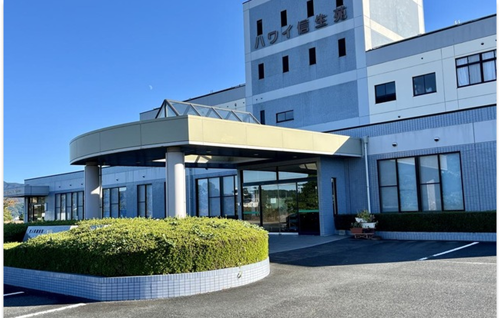

医療法人 専仁会
介護老人保健施設 ハワイ信生苑
介護老人保健施設 ハワイ信生苑 居宅介護支援事業所
介護を必要とする高齢者の自立を支援し、医師による医学的管理のもと、看護および介護、理学療法士などによるリハビリテーション、栄養管理・食事・温泉入浴等の日常サービスを提供しています。
また、介護保険利用を支援するため、居宅介護支援事業所も併設しております。
くわしく見る
当院は、鳥取県倉吉市に位置する地域密着型の医療機関です。
患者様の健康と福祉を最優先に考え、質の高い医療サービスを提供しています。
診療科目には内科・外科・整形外科・婦人科・皮膚科などがあり、幅広いニーズに対応しています。
地域の皆様の健康を支える信頼の医療機関です。
患者様の人権と生活の質を尊重した看護を提供します。
多職種と連携し、チーム医療の向上を図ります。
専門職として自己研鑽を重ね、質の高い看護を目指します。

信生病院は、倉吉市の中核病院として、地域の皆様の健康を守り、安心して暮らせる医療環境の提供に努めてまいりました。私たちは、最新の医療技術と設備を導入しながらも、常に患者様に寄り添う温かな医療を心がけています。
これからも地域の皆様の信頼に応えられるよう、職員一同、日々研鑽を重ねてまいります。
信生病院
院長 吹野 俊介
信生病院は、一般の内科外科診療に加え、物忘れ外来、循環器内科など専門性の高い外来診療も行っています。
入院においては、急性期医療の治療を終えても引き続き医療の必要性が高く、長期療養が必要な患者様を主な対象とする療養型病棟を有しています。
入院可能期間に制限がなく、その人の症状や生活背景に合わせて、長期的な目線でケアを提供できる地域に根差した病院です。
一人ひとりの患者さまが安心して外来通院や入院生活ができるよう、まごころを込めて地域の皆さまから信頼される看護の提供に努めてまいります。
安全で適切な薬剤の提供と服薬支援を行い、治療効果を最大限に高めるサポートをしています。
患者様の病状に合わせた栄養計画を立て、健康回復を支える食事提供と栄養指導を行っています。
正確で迅速な検査を通じて診断と治療を支援し、安心できる医療提供に貢献しています。
医療法人 専仁会
介護を必要とする高齢者の自立を支援し、医師による医学的管理のもと、看護および介護、理学療法士などによるリハビリテーション、栄養管理・食事・温泉入浴等の日常サービスを提供しています。
また、介護保険利用を支援するため、居宅介護支援事業所も併設しております。
くわしく見る社会福祉法人 信生会
デイサービスセンターハワイ信生荘では、リハビリの充実に力を入れています。母体である当院の協力のもと、皆様の健康維持・増進を目指しております。
グループホーム信生ゆりはまの里では、家庭的な雰囲気のもと、食事・入浴・排泄等の日常生活を介護スタッフと共に過ごして、一人ひとりが持つ能力に応じ、自分らしく生活できるようにサポートさせていただきます。
くわしく見る